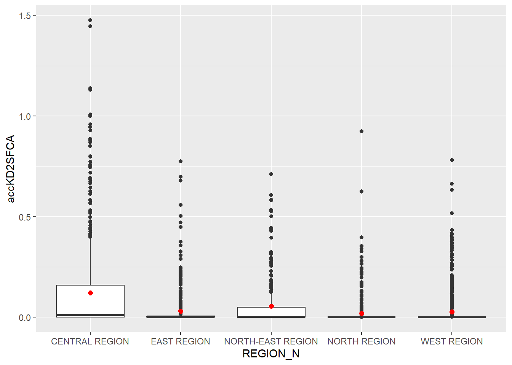

pacman::p_load(tmap, SpatialAcc, sf, ggstatsplot, reshape2, tidyverse)Hands-on Exercise 09
Modelling Geographical Accessibility
In this exercise, we will model geographical accessibility by using R’s geospatial analysis packages.
1.0 The data
We will be using four datasets in this exercise:
MP14_SUBZONE_NO_SEA_PL, for URA Master Plan 2014 Subzone Boundary GIS data
hexagons, for a 250m radius hexagons GIS data
ELDERCARE, for GIS data showing location of eldercare services
OD_MATRIX, for a distance matrix in csv format
2.0 Getting Started
We will first install the necessary R packages and launch them into RStudio.
The packages needed for this exercise are:
sf, for spatial data handling
spatialAcc, for modelling geographical accessibility
tidyverse, for attribute data handling
tmap, for thematic mapping
ggplot2, for statistical graphics
ggstatsplot, for statistical analysis
The code chunk below installs and launches these R packages into RStudio:
3.0 Geospatial Data Wrangling
3.1 Importing Geospatial Data
Three geospatial data will be imported using the code chunk below, which uses st_read() of sf packages to import these shapefiles.
#|eval: false
mpsz <- st_read(dsn = "data/geospatial", layer = "MP14_SUBZONE_NO_SEA_PL")Reading layer `MP14_SUBZONE_NO_SEA_PL' from data source
`C:\byebhai8\ISSS626-GeospatialAnalytics\Hands-On_Ex\Hands-on_Ex09\data\geospatial'
using driver `ESRI Shapefile'
Simple feature collection with 323 features and 15 fields
Geometry type: MULTIPOLYGON
Dimension: XY
Bounding box: xmin: 2667.538 ymin: 15748.72 xmax: 56396.44 ymax: 50256.33
Projected CRS: SVY21write_rds(mpsz, "data/rds/mpsz.rds")#|eval: false
hexagons <- st_read(dsn = "data/geospatial", layer = "hexagons") Reading layer `hexagons' from data source
`C:\byebhai8\ISSS626-GeospatialAnalytics\Hands-On_Ex\Hands-on_Ex09\data\geospatial'
using driver `ESRI Shapefile'
Simple feature collection with 3125 features and 6 fields
Geometry type: POLYGON
Dimension: XY
Bounding box: xmin: 2667.538 ymin: 21506.33 xmax: 50010.26 ymax: 50256.33
Projected CRS: SVY21 / Singapore TMwrite_rds(hexagons, "data/rds/hexagons.rds")#|eval: false
eldercare <- st_read(dsn = "data/geospatial", layer = "ELDERCARE") Reading layer `ELDERCARE' from data source
`C:\byebhai8\ISSS626-GeospatialAnalytics\Hands-On_Ex\Hands-on_Ex09\data\geospatial'
using driver `ESRI Shapefile'
Simple feature collection with 120 features and 19 fields
Geometry type: POINT
Dimension: XY
Bounding box: xmin: 14481.92 ymin: 28218.43 xmax: 41665.14 ymax: 46804.9
Projected CRS: SVY21 / Singapore TMwrite_rds(eldercare, "data/rds/eldercare.rds")To read in the saved rds files:
mpsz <- read_rds("data/rds/mpsz.rds")
hexagons <- read_rds("data/rds/hexagons.rds")
eldercare <- read_rds("data/rds/eldercare.rds")3.2 Updating CRS information
The code chunk below updates the newly imported shapefiles with the correct EPSG code.
mpsz <- st_transform(mpsz, 3414)
eldercare <- st_transform(eldercare, 3414)
hexagons <- st_transform(hexagons, 3414)We can now verify the projection of the newly transformed data by using st_crs() of sf package, as shown in the code chunk below.
st_crs(mpsz)Coordinate Reference System:
User input: EPSG:3414
wkt:
PROJCRS["SVY21 / Singapore TM",
BASEGEOGCRS["SVY21",
DATUM["SVY21",
ELLIPSOID["WGS 84",6378137,298.257223563,
LENGTHUNIT["metre",1]]],
PRIMEM["Greenwich",0,
ANGLEUNIT["degree",0.0174532925199433]],
ID["EPSG",4757]],
CONVERSION["Singapore Transverse Mercator",
METHOD["Transverse Mercator",
ID["EPSG",9807]],
PARAMETER["Latitude of natural origin",1.36666666666667,
ANGLEUNIT["degree",0.0174532925199433],
ID["EPSG",8801]],
PARAMETER["Longitude of natural origin",103.833333333333,
ANGLEUNIT["degree",0.0174532925199433],
ID["EPSG",8802]],
PARAMETER["Scale factor at natural origin",1,
SCALEUNIT["unity",1],
ID["EPSG",8805]],
PARAMETER["False easting",28001.642,
LENGTHUNIT["metre",1],
ID["EPSG",8806]],
PARAMETER["False northing",38744.572,
LENGTHUNIT["metre",1],
ID["EPSG",8807]]],
CS[Cartesian,2],
AXIS["northing (N)",north,
ORDER[1],
LENGTHUNIT["metre",1]],
AXIS["easting (E)",east,
ORDER[2],
LENGTHUNIT["metre",1]],
USAGE[
SCOPE["Cadastre, engineering survey, topographic mapping."],
AREA["Singapore - onshore and offshore."],
BBOX[1.13,103.59,1.47,104.07]],
ID["EPSG",3414]]3.3 Attribute field clean-up
There are many redundant fields in the data tables of both eldercare and hexagons. The code chunk below will be used to exclude those redundant fields. We will also add new fields called demand and capacity.
eldercare <- eldercare %>%
select(fid, ADDRESSPOS) %>%
mutate(capacity = 100)
hexagons <- hexagons %>%
select(fid) %>%
mutate(demand = 100)4.0 Aspatial Data Wrangling
4.1 Importing distance matrix
The code chunk below uses read_csv() of readr package to import the matrix file into RStudio as a tibble data frame.
#|eval: false
ODMatrix <- read_csv("data/aspatial/OD_Matrix.csv", skip = 0)Rows: 375000 Columns: 6
── Column specification ────────────────────────────────────────────────────────
Delimiter: ","
dbl (6): origin_id, destination_id, entry_cost, network_cost, exit_cost, tot...
ℹ Use `spec()` to retrieve the full column specification for this data.
ℹ Specify the column types or set `show_col_types = FALSE` to quiet this message.write_rds(ODMatrix, "data/rds/ODMatrix.rds")To read in the saved rds files:
ODMatrix <- read_rds("data/rds/ODMatrix.rds")4.2 Tidying distance matrix
The code chunk below uses spread() of tidyr package to transfer the matrix from a thin format into a fat format.
distmat <- ODMatrix %>%
select(origin_id, destination_id, total_cost) %>%
spread(destination_id, total_cost)%>%
select(c(-c('origin_id')))Currently, the distance is measured in metre because svy21 projected coordinate system is used. The code chunk below will be used to convert the unit f measurement from metre to kilometre.
distmat_km <- as.matrix(distmat/1000)5.0 Modelling & Visualizing Accessibility using Hansen Method
5.1 Computing Hansen’s accessibility
We can compute Hansen’s accessibility by using ac() of SpatialAcc package, as shown in the code chunk below.
acc_Hansen <- data.frame(ac(hexagons$demand,
eldercare$capacity,
distmat_km,
#d0 = 50,
power = 2,
family = "Hansen"))As the default field name is messy, we will rename it using the code chunk below:
colnames(acc_Hansen) <- "accHansen"Next, we will convert the data frame into tibble format by using the code chunk below:
acc_Hansen <- tbl_df(acc_Hansen)Warning: `tbl_df()` was deprecated in dplyr 1.0.0.
ℹ Please use `tibble::as_tibble()` instead.Lastly, blind_cols() of dplyr package will be used to join this tibble data frame with the hexagons simple feature data frame.
hexagon_Hansen <- bind_cols(hexagons, acc_Hansen)5.2 Visualizing Hansen’s accessibility
First, we will extract the extend of hexagons simple feature data frame using the st_bbox() of sf package.
mapex <- st_bbox(hexagons)The code chunk below uses tmap package’s functions to create a cartographic map:
tmap_mode("plot")tmap mode set to plottingtm_shape(hexagon_Hansen,
bbox = mapex) +
tm_fill(col = "accHansen",
n = 10,
style = "quantile",
border.col = "black",
border.lwd = 1) +
tm_shape(eldercare) +
tm_symbols(size = 0.1) +
tm_layout(main.title = "Accessibility to eldercare: Hansen method",
main.title.position = "center",
main.title.size = 2,
legend.outside = FALSE,
legend.height = 0.45,
legend.width = 3.0,
legend.format = list(digits = 6),
legend.position = c("right", "top"),
frame = TRUE) +
tm_compass(type="8star", size = 2) +
tm_scale_bar(width = 0.15) +
tm_grid(lwd = 0.1, alpha = 0.5)
5.3 Statistical graphic visualization
We will now compare the distribution of Hansen’s accessibility values by URA Planning Region.
First, we need to add the planning region field:
hexagon_Hansen <- st_join(hexagon_Hansen, mpsz,
join = st_intersects)Next, we will use ggplot() to plot the distribution as a boxplot:
ggplot(data=hexagon_Hansen,
aes(y = log(accHansen),
x= REGION_N)) +
geom_boxplot() +
geom_point(stat="summary",
fun.y="mean",
colour ="red",
size=2)Warning in geom_point(stat = "summary", fun.y = "mean", colour = "red", :
Ignoring unknown parameters: `fun.y`No summary function supplied, defaulting to `mean_se()`
6.0 Modelling & Visualizing Accessibility using KD2SFCA Method
6.1 Computing KD2SFCA’s accessibility
The code chunk below calculates KD2SFCA’s accessibility:
acc_KD2SFCA <- data.frame(ac(hexagons$demand,
eldercare$capacity,
distmat_km,
d0 = 50,
power = 2,
family = "KD2SFCA"))
colnames(acc_KD2SFCA) <- "accKD2SFCA"
acc_KD2SFCA <- tbl_df(acc_KD2SFCA)Warning: `tbl_df()` was deprecated in dplyr 1.0.0.
ℹ Please use `tibble::as_tibble()` instead.hexagon_KD2SFCA <- bind_cols(hexagons, acc_KD2SFCA)6.2 Visualizing KD2SFCA’s accessibility
The code chunk below uses tmap package’s functions to create a cartographic map:
tmap_mode("plot")tmap mode set to plottingtm_shape(hexagon_KD2SFCA,
bbox = mapex) +
tm_fill(col = "accKD2SFCA",
n = 10,
style = "quantile",
border.col = "black",
border.lwd = 1) +
tm_shape(eldercare) +
tm_symbols(size = 0.1) +
tm_layout(main.title = "Accessibility to eldercare: KD2SFCA method",
main.title.position = "center",
main.title.size = 2,
legend.outside = FALSE,
legend.height = 0.45,
legend.width = 3.0,
legend.format = list(digits = 6),
legend.position = c("right", "top"),
frame = TRUE) +
tm_compass(type="8star", size = 2) +
tm_scale_bar(width = 0.15) +
tm_grid(lwd = 0.1, alpha = 0.5)
6.3 Statistical graphic visualization
We will now compare the distribution of KD2SFCA accessibility values by URA Planning Region.
First, we need to add the planning region field:
hexagon_KD2SFCA <- st_join(hexagon_KD2SFCA, mpsz,
join = st_intersects)Next, we will use ggplot() to plot the distribution as a boxplot:
ggplot(data=hexagon_KD2SFCA,
aes(y = accKD2SFCA,
x= REGION_N)) +
geom_boxplot() +
geom_point(stat="summary",
fun.y="mean",
colour ="red",
size=2)Warning in geom_point(stat = "summary", fun.y = "mean", colour = "red", :
Ignoring unknown parameters: `fun.y`No summary function supplied, defaulting to `mean_se()`
7.0 Modelling & Visualizing Accessibility using Spatial Accessibility Measure (SAM) Method
7.1 Computing SAM accessibility
The code chunk below calculates SAM’s accessibility:
acc_SAM <- data.frame(ac(hexagons$demand,
eldercare$capacity,
distmat_km,
d0 = 50,
power = 2,
family = "SAM"))
colnames(acc_SAM) <- "accSAM"
acc_SAM <- tbl_df(acc_SAM)Warning: `tbl_df()` was deprecated in dplyr 1.0.0.
ℹ Please use `tibble::as_tibble()` instead.hexagon_SAM <- bind_cols(hexagons, acc_SAM)7.2 Visualizing SAM’s accessibility
The code chunk below uses tmap package’s functions to create a cartographic map:
tmap_mode("plot")tmap mode set to plottingtm_shape(hexagon_SAM,
bbox = mapex) +
tm_fill(col = "accSAM",
n = 10,
style = "quantile",
border.col = "black",
border.lwd = 1) +
tm_shape(eldercare) +
tm_symbols(size = 0.1) +
tm_layout(main.title = "Accessibility to eldercare: SAM method",
main.title.position = "center",
main.title.size = 2,
legend.outside = FALSE,
legend.height = 0.45,
legend.width = 3.0,
legend.format = list(digits = 3),
legend.position = c("right", "top"),
frame = TRUE) +
tm_compass(type="8star", size = 2) +
tm_scale_bar(width = 0.15) +
tm_grid(lwd = 0.1, alpha = 0.5)
7.3 Statistical graphic visualization
We will now compare the distribution of SAM accessibility values by URA Planning Region.
First, we need to add the planning region field:
hexagon_SAM <- st_join(hexagon_SAM, mpsz,
join = st_intersects)Next, we will use ggplot() to plot the distribution as a boxplot:
ggplot(data=hexagon_SAM,
aes(y = accSAM,
x= REGION_N)) +
geom_boxplot() +
geom_point(stat="summary",
fun.y="mean",
colour ="red",
size=2)Warning in geom_point(stat = "summary", fun.y = "mean", colour = "red", :
Ignoring unknown parameters: `fun.y`No summary function supplied, defaulting to `mean_se()`
x